Wireless Networked Embedded Systems
How embedded devices talk without wires: radio waves and decibels, link budgets and the two requirements for reception, frequency bands and channels, and the medium access and radio duty cycling protocols that let battery-powered devices share a channel and still last for years.
Radio basics and the link budget
Wireless vs wired embedded systems
Freedom versus reliability
Cables are reliable: a signal in a wire mostly stays in the wire. But you cannot put a cable on a runner's wrist, on a delivery van, or across a farm with no infrastructure.
Wireless trades some reliability and security for freedom. Think of a landline versus a mobile phone: the landline almost never drops a call, but it cannot follow you around.
- Wireless networked embedded systems are necessary in mobile embedded systems (wearables, vehicles) and in systems deployed in areas without easy access to infrastructure.
- They are generally cheaper, more flexible and easier to install. They can be reliable and secure, "but...": that takes effort, and much of this lecture is about that effort.
- Wired networked embedded systems (Week 7: CAN, Ethernet) are more reliable, being less vulnerable to interference and environmental noise, and more secure, being less vulnerable to physical attacks.
- Every wireless signal is broadcast: anyone in range can receive it, and every other transmitter in range competes with it. That one fact drives the rest of the lecture: link budgets, interference, medium access and duty cycling.
Basics of wireless communications
From current to wave and back
A radio is a loudspeaker and an ear for electricity. The transmitter pushes a rapidly changing current into its antenna, which turns it into a wave travelling through space.
At the other end, the receiving antenna turns the tiny part of that wave that reaches it back into a current, and the receiver works out which bits were sent.
- Transmission: the radio transmitter generates an electric current and supplies it to the antenna. The antenna radiates the energy as an electromagnetic wave (radio wave). Data are encoded in the physical properties of the radio wave (frequency, phase, etc.).
- Reception: the antenna produces an electric current based on the electromagnetic waves that reach it. The radio receiver filters and amplifies the signal and recovers the transmitted data via demodulation.
- Unlike UART or SPI (Week 5) there is no shared ground and no clock wire: everything the receiver needs must be recovered from the wave itself. That is why every frame starts with a preamble (slide 20).
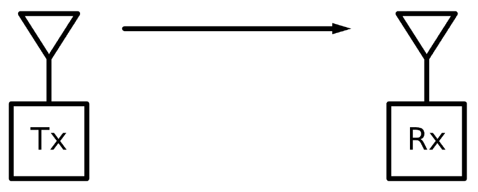
Radio waves and decibels
Huge ratios as small numbers
Radio power shrinks enormously on the way: a signal sent with 0.2 W can arrive with 0.1 pW, two million million times weaker. Writing such numbers is clumsy.
So radio engineers count in decibels, which turn huge ratios into small numbers and multiplications into additions. The slide's picture: a balloon whose rubber gets thinner and thinner as it expands.
- As a radio wave propagates through 3D space its power attenuates very fast. The slide's example: transmitted at 0.2 W, received at 0.1 pW. Radio signal power has a huge dynamic range.
- Power is typically expressed in decibels (dB), a relative unit on a logarithmic scale: how big or small something is with respect to a reference P0.PdB = 10 log10(P / P0)
- dB arithmetic: addition in the logarithmic domain is multiplication in the linear domain. Rules of thumb: +3 dB ≈ ×2, -3 dB ≈ ÷2, +10 dB ≈ ×10, -10 dB ≈ ÷10.
- The slide's question: +17 dB = +10 dB + 10 dB - 3 dB = ×10 ×10 ÷2 = ×50. (Exactly 101.7 ≈ 50.1; +3 dB is really ×1.995.)
- The balloon example in dB: 10 log10(0.2 W / 10-13 W) ≈ 123 dB of attenuation.
Decibels: typical power references
dB relative to 1 mW
A decibel on its own only says "bigger or smaller than something". To talk about actual power, pick a fixed reference: 1 milliwatt.
Power measured against 1 mW is in dBm: 0 dBm is 1 mW, 30 dBm is 1 W, -100 dBm is a ten-billionth of a milliwatt.
- Amplification and attenuation are expressed relative to the input power. A 3 dB power amplifier doubles the power of the signal it receives.PdB = 10 log10(POUT / PIN)
- Absolute power is expressed relative to 1 mW (dBm). A -10 dBm signal has about 1/10 of the power of 1 mW, i.e. 0.1 mW.PdBm = 10 log10(P / 1 mW)
- Combination: gains in dB add to levels in dBm. A -10 dBm signal through a 3 dB amplifier gives -10 dBm + 3 dB = -7 dBm (about 0.2 mW). Never add two dBm values: that would multiply milliwatts (slide 13 shows how powers add).
- The table spans the sun (296 dBm) to thermal noise (-174 dBm). Small embedded systems transmit around 0 dBm, a phone up to 27 dBm, a WiFi router up to 30 dBm; WiFi can still receive down to about -100 dBm.
- The slide lists thermal noise as -174 dBm. Strictly, that is -174 dBm per hertz of bandwidth at room temperature: a receiver listening to a 2 MHz channel collects about -174 + 10 log10(2 × 106) ≈ -111 dBm of thermal noise.
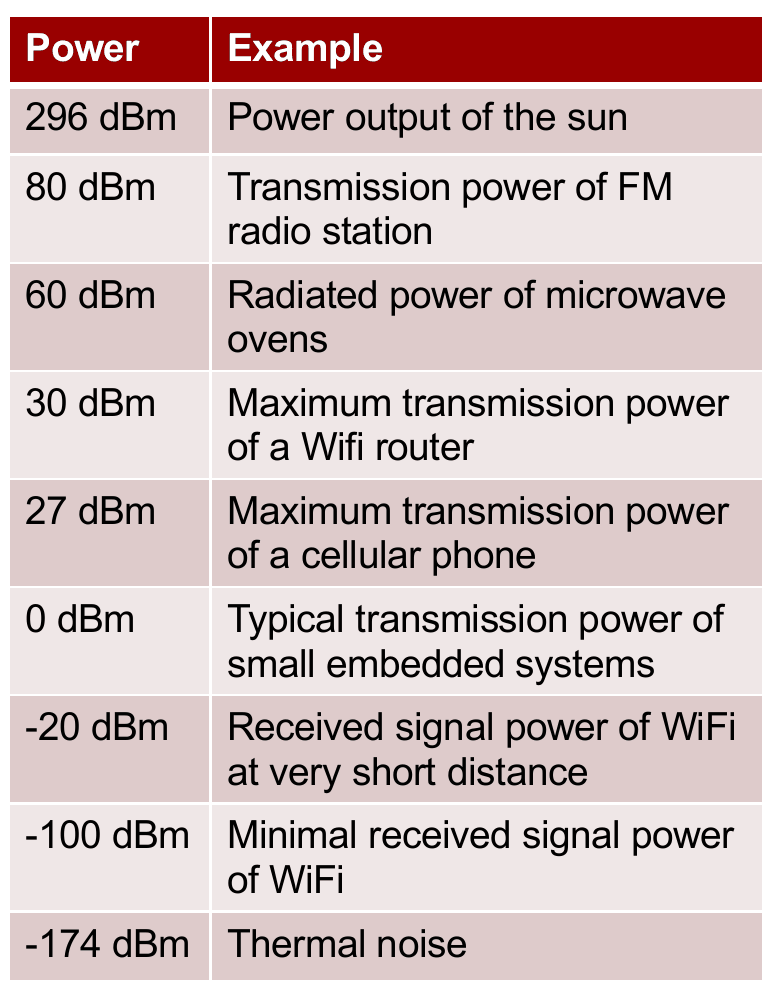
Link budget
A bank statement for the signal
A link budget is a bank statement for the signal. Start with the transmit power, add what the antennas give you, subtract what cables, connectors and the journey through the air take away, and see what is left at the receiver.
If what is left is more than the receiver needs, the link works. The surplus is your margin.
A received signal power approximator, all terms in dB:
- PRX: the received power (dBm). PTX: the transmission power (dBm).
- GTX, GRX: the transmitter and receiver antenna gains (dBi).
- LTX, LRX: the transmitter and receiver losses: cables, connectors, etc. (dB).
- LP: the path loss (dB). It depends on the distance between transmitter and receiver, the frequency of the signal and the propagation environment.
- The Received Signal Strength Indicator (RSSI) can be used to estimate the path loss: LP ≈ PTX + GTX - LTX + GRX - LRX - RSSI.
- Comparing PRX with the receiver's sensitivity (slide 12) gives the link margin, and turns the budget around into the largest path loss the link can survive:margin = PRX - sensitivity max LP = PTX + GTX - LTX + GRX - LRX - sensitivity
Path loss
Predictable in space, dynamic on Earth
In empty space the loss is perfectly predictable: double the distance, lose a factor of four.
Indoors, the signal bounces off walls, floors and people, and the copies arrive slightly out of step. Sometimes they reinforce each other, sometimes they cancel. Move a person across the room and the received power jumps, although the distance never changed.
- Path loss is very predictable in free space, but very dynamic down on Earth.
- Multipath fading: a wireless signal reflects on surfaces or the air, and multiple rays reach the receiver. Rays may arrive with small delays because of longer travel paths (phase shifts) and interfere constructively or destructively.
- Shadowing: obstacles in between attenuate signals; metallic objects block them completely.
- Path loss is very dynamic even when the transmitter and receiver are static: the figure shows the RSSI of a static link in an office during working hours, varying by 20 dB and more.
- A common model (beyond the slide): the free-space (Friis) loss at 1 m, plus 10·n·log10(d) with a path-loss exponent n: 2 in free space, about 3 indoors, 4 or more with obstructions.LP(d) ≈ 20 log10(4π f / c) + 10 n log10(d / 1 m) 40.2 dB at 1 m and 2.44 GHz
- In free space doubling the distance adds 20 log10(2) ≈ 6 dB (the inverse-square law); with n = 3 it adds 9 dB.
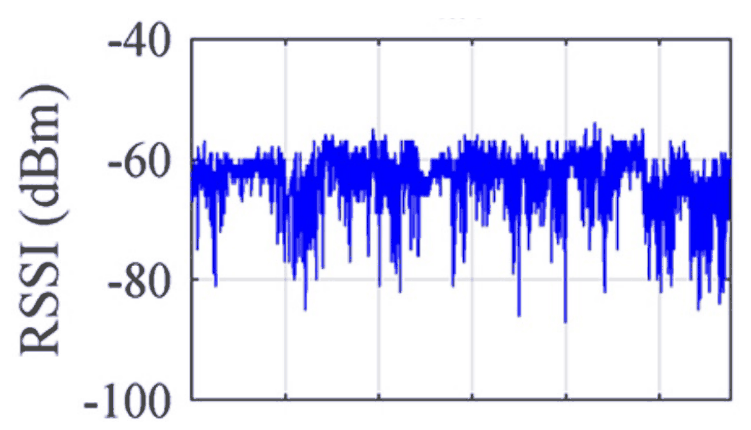
Antenna gain
Passive, but directional
An antenna is like the reflector of a torch. It cannot make the bulb brighter, but it can push the light in one direction.
A spotlight is very bright straight ahead and dark everywhere else; a bare bulb lights the whole room dimly. Antennas trade strength in one direction for weakness in the others.
- Antennas are passive components: they do not amplify the signal; they reshape it, sending or receiving more energy in some directions than in others.
- Isotropic antenna: a theoretical antenna that emits and collects energy equally in all 3D directions, used as the reference for directivity.
- Directivity: real-world antennas emit and collect more energy in some directions. It is measured as the peak power gain relative to the isotropic antenna, in dBi. High directivity means high gain in one direction, but low gain in all others.
- Low directivity is good when the source location is unknown (e.g. mobility). High directivity is good when the source location is known (e.g. point-to-point links).
- Antenna gain = directivity - losses. That gain is the GTX and GRX of the link budget.
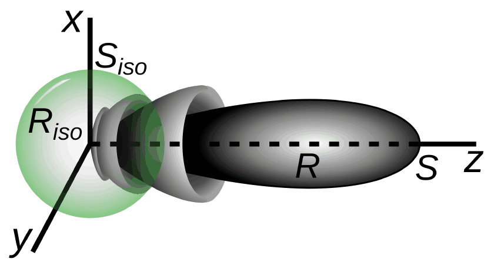
Connecting antennas to radios
Connectors, traces, matching and baluns
Getting the signal from the radio chip into the antenna is plumbing, and the pipe has to fit.
If the radio, the line and the antenna do not match, part of the power bounces back, like water hitting a narrowing in a hose. Small passive circuits make them fit.
- External antennas connect to the PCB via SMA or u.FL connectors.
- Printed antennas are a copper trace printed on the PCB.
- A matching circuit maximises the power emitted and minimises the power reflected back.
- A balun (balanced to unbalanced) is a chip that converts the balanced output of a specific radio into the unbalanced input of an antenna, with an integrated matching circuit. Some radios have an integrated balun, so you just connect the antenna.
- Whatever these parts lose is the LTX and LRX of the link budget.
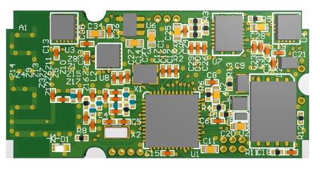
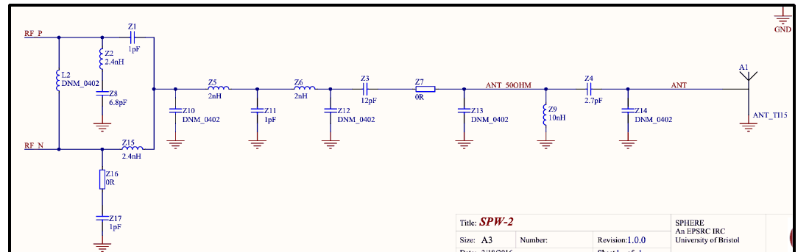
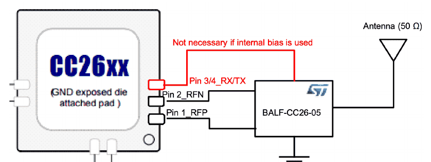
Reception, interference and spectrum
Requirements for a successful reception
Loud enough, and louder than the rest
Two things must be true to understand someone in a noisy bar. They must speak loudly enough for you to hear them at all, and they must be clearly louder than everyone else talking at the same time.
Radio reception has exactly these two requirements.
- There are two requirements for successful packet reception.
- 1. The received signal must be powerful enough to be perceived. A radio receiver typically has a sensitivity threshold, e.g. -97 dBm: the lowest signal power from which it can extract information. A weaker signal is perceived as noise.
- 2. The received signal must be sufficiently more powerful than the sum of any external interference captured by the receiver antenna. External interference can introduce bit errors in the decoding process.
- Wireless environments are exposed to interference, so robust communication typically requires a received power higher than the sensitivity: a margin.
- The second requirement is usually written as a ratio in dB, SIR = S - I or, including noise, SINR = S / (I + N). How large it must be depends on the radio's modulation and coding.
Interference
Everyone shares the same air
Radio is a room where everybody shouts into the same air. Your receiver hears every transmitter in range, not just the one it wants.
Whether a signal is "the message" or "noise" depends only on who is listening.
- Wireless interference: all wireless signals are broadcast in the environment and receivers collect all of them. To decode a signal, it must be sufficiently stronger than all others received.
- Interference is subjective: a signal creates interference to others (analogy: speaking and listening). In the figure each receiver wants one transmitter (black arrows) and hears the other as interference (red).
- Sources: other transmitters of the same network, transmitters from overlapping networks, and other electronics (microwave ovens, lights, etc.).
- Interfering powers add up in linear units, not in dBm: two -90 dBm interferers give 2 × 10-9 mW, which is -87 dBm.Itotal = 10 log10(Σ 10Ik/10) dBm
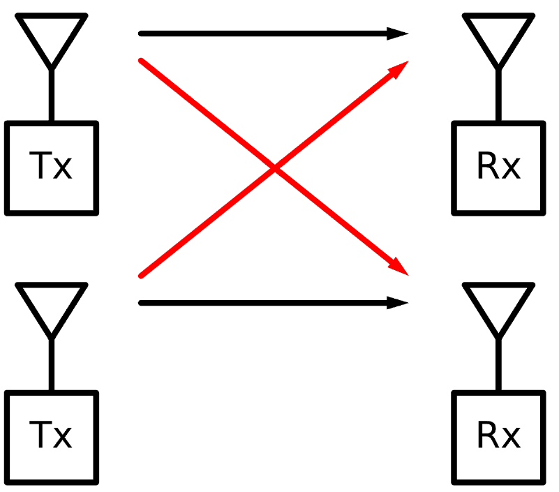
Capture effect
When a collision is not fatal
When two people talk to you at once, you can often still follow the one standing right next to you; the distant voice is just background.
A radio does the same: of two simultaneous transmissions, the much stronger one can still be decoded.
- Assume two simultaneous packet transmissions from Tx1 and Tx2 with equal transmission power.
- The closer transmission from Tx2 can be received without errors: from the perspective of Tx2 the interference is low, from the perspective of Tx1 it is high.
- So a collision does not always destroy both packets. How much stronger the winner must be (the capture threshold) depends on the radio; a few dB is typical for narrowband radios.
- With path-loss exponent n, a power advantage of X dB requires the winner to be 10X/(10n) times closer: about 1.41× for 3 dB in free space.
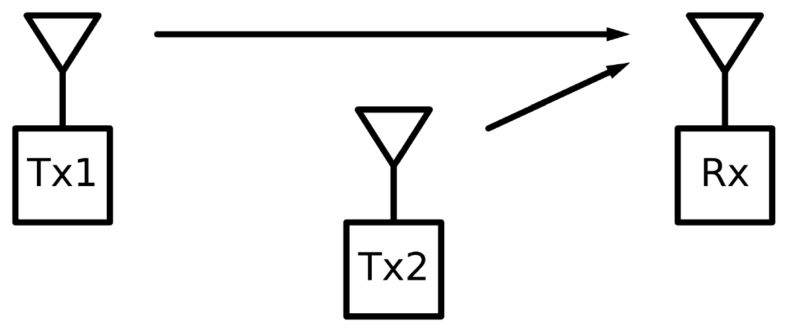
Wireless coverage
A fuzzy, moving edge
Coverage maps draw a neat circle around an access point: inside it works, outside it does not.
Reality is a fuzzy, moving edge. Near it some packets get through and some do not, and the odds depend on more than the distance.
- Coverage is often simplified as a circle or a cell. But the real world is not so simple: RSSI is very dynamic due to multipath fading and shadowing, and the bit error rate (BER) is very dynamic due to interference.
- The packet error rate (PER) depends on transmission power and antennas, distance, environment, interference, transmission rate and packet size.
- The figure: PER versus RSSI for BLE and IEEE 802.15.4 with 21 B and 39 B packets. PER falls from almost 1 to around 10-3 within roughly 10 dB of RSSI, and longer packets fail more often.
- With independent bit errors and no error correction, a packet of L bytes fails if any bit fails:PER = 1 - (1 - BER)8·L
- Why 802.15.4 copes with weaker signals in this figure (beyond the slide): it sends at 250 kbit/s against BLE's 1 Mbit/s, and spreads every 4-bit symbol over 32 chips (DSSS), so each bit carries more energy. A lower transmission rate is one of the slide's PER factors.
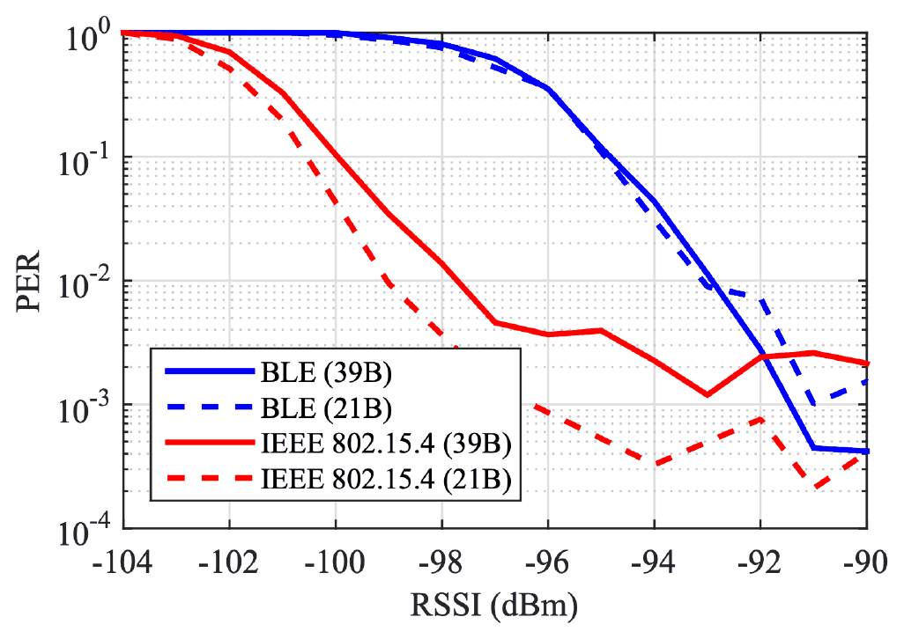
Carrier wave
Bits on top of a steady tone
A carrier wave is a steady hum at one precise pitch. To send data you bend the hum slightly: a bit higher for '1', a bit lower for '0'.
A receiver tuned to that pitch ignores everything else, which is how many radios can share the air without hearing each other.
- Information is encoded in the physical properties of a radio wave (amplitude, frequency, phase, etc.).
- The modifications that represent '0' and '1' are done on top of a carrier wave with frequency fc.
- Example: BFSK (Binary Frequency Shift Keying): '0' is represented as fc - f0, '1' as fc + f0.
- Advantages: the receiver can use a bandpass filter to filter out all signals that are not near the carrier; interference is limited to signals close to the carrier frequency; parallel interference-free transmissions are possible on different frequencies.
- Related schemes (beyond the slide): amplitude-shift keying changes the amplitude (on-off keying in the extreme), phase-shift keying changes the phase. BLE uses a smoothed form of frequency shift keying (GFSK).
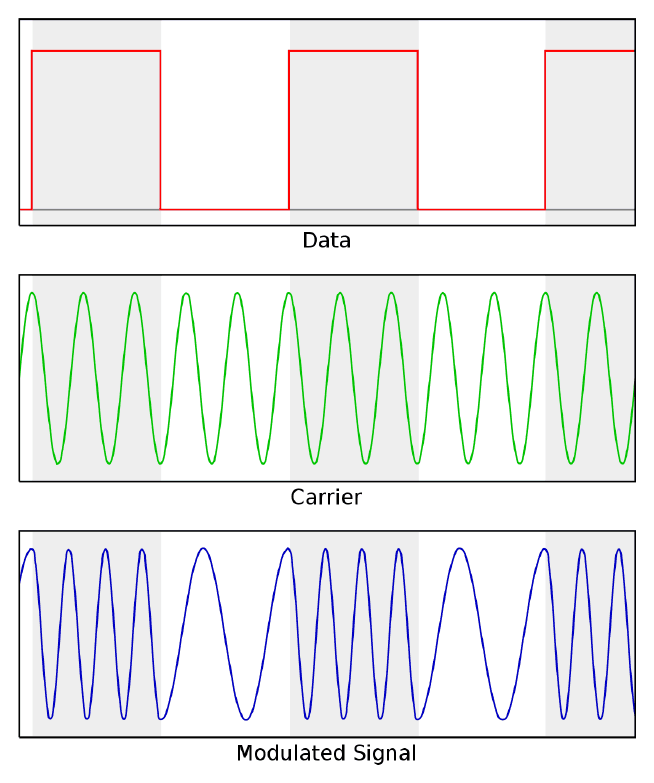
Frequency band: trade-offs
Bass note or whistle
Low radio frequencies are like a bass note: they carry far and pass through walls, but you cannot play fast melodies with them.
High frequencies are like a whistle: fast and precise, but easily blocked. Choosing a band is choosing your trade-off.
- Lower frequency band: lower path loss, more obstacle penetration, more coverage; but more interference, less capacity for data, lower bitrate and bigger antennas.
- Above visible light, EM radiation is dangerous (ultraviolet, X-rays and gamma rays are ionising).
- Digital systems typically communicate with radio waves and microwaves, 300 MHz to 300 GHz: 300 MHz to 1 GHz (sub-GHz): UHF radar band; 1 GHz to 30 GHz: UHF and SHF bands; 30 GHz to 300 GHz (millimetre wave): EHF band.
- Antenna size scales with the wavelength λ = c / f. A quarter-wave antenna is about 17 cm at 433 MHz and about 3 cm at 2.4 GHz.λ = c / f 2.4 GHz: 12.5 cm
- Beyond the slide: with fixed-gain antennas, free-space path loss grows with f2 (+6 dB per doubling of frequency), because the receiving antenna's effective area shrinks with λ2. For the same link budget, free-space range scales with 1/f.
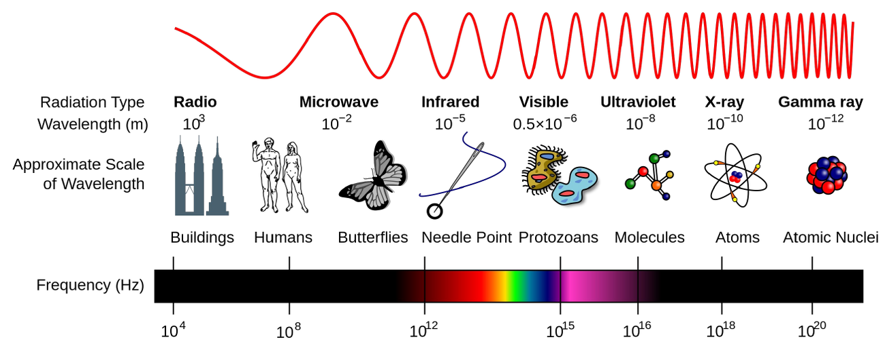
Frequency bands: rules
Licensed and unlicensed spectrum
The radio spectrum is like land: there is only so much, so governments zone it.
Some plots are private (licensed: you pay, often a lot, for exclusive use); some are public parks (unlicensed: anyone may use them, as long as they follow the park rules).
- Frequency bands are limited and therefore regulated by governments: who can use them, how often they can be used, and the maximum transmission power.
- Licensed bands: illegal to transmit in unless you have a license. Used by government, aviation, military, etc., and rented to telecom providers (cellular).
- Unlicensed bands: OK to use without a license: the ISM (industrial, scientific and medical) bands defined by the ITU (International Telecommunication Union), and regional bands such as 863 to 870 MHz in Europe.
- In the table some ISM bands are worldwide (for example 13.56 MHz, 2.4 GHz, 5.8 GHz, 24 GHz), others regional (433 MHz for Europe, Africa and the Middle East; 902 to 928 MHz for the Americas) or subject to local acceptance.
- "How often" is meant literally (beyond the slide): parts of the European 868 MHz band limit each device to a duty cycle such as 1% of the time.
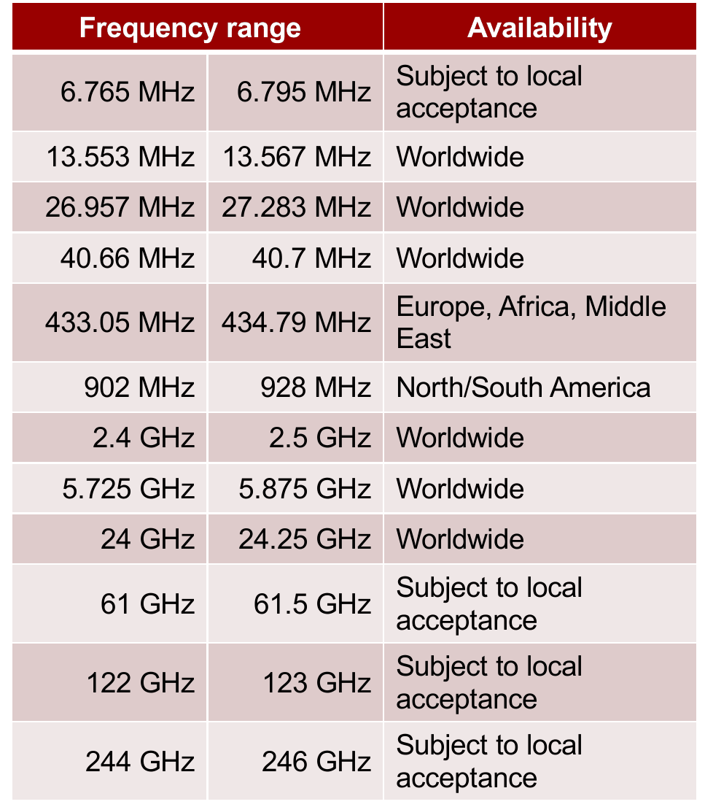
Wireless channels
Lanes on a motorway
A band is a motorway and channels are its lanes. If lanes are painted too close together, cars in neighbouring lanes bump into each other: overlapping channels.
With enough space between them, traffic flows side by side without trouble: orthogonal channels.
- A band can be further split into channels.
- Overlapping channels interfere with each other. Orthogonal channels do not.
- FDMA (Frequency Division Multiple Access): transmitters can transmit in parallel on different orthogonal channels without interfering with each other.
- 2.4 GHz WiFi channel n is centred at 2407 + 5n MHz but is about 22 MHz wide, so only channels at least 25 MHz apart, such as 1, 6 and 11, are orthogonal.
- IEEE 802.15.4 (Zigbee, Thread) has 16 channels of 2 MHz, 5 MHz apart, from 2405 MHz (channel 11) to 2480 MHz (channel 26); channels 15, 20, 25 and 26 fall outside WiFi channels 1, 6 and 11. BLE has 40 channels of 2 MHz between 2402 and 2480 MHz, with its three advertising channels (2402, 2426, 2480 MHz) chosen to stay mostly clear of WiFi 1, 6 and 11.
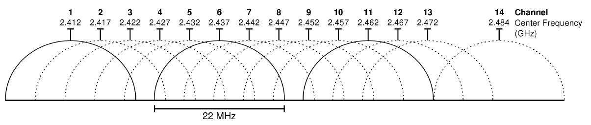
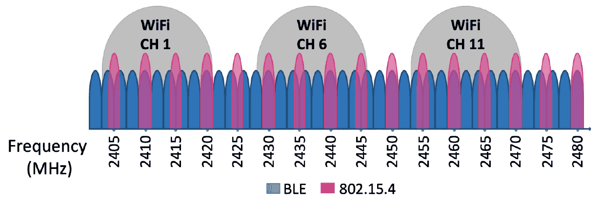
Sharing a channel in a star
Radio states
Talk or listen, never both
A radio is a walkie-talkie, not a telephone: it can talk or listen, but never both at once.
And to notice that someone starts talking, it has to be listening already.
- The receiver filters, amplifies and decodes the incoming signal. Each frame starts with a preamble, a synchronisation phrase that lets the receiver lock on to it.
- Receive (receiving data) and listen (receiving noise) are the same state, electrically and energetically.
- Wireless radios have two modes, transmit and receive. Devices cannot receive while they transmit, so collisions cannot be detected as they happen (unlike wired CSMA/CD in Week 7).
- Devices need to be in receive mode when idle to detect incoming frames: idle listening.
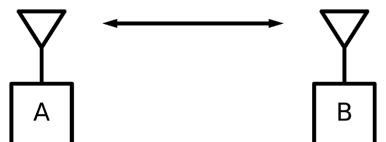
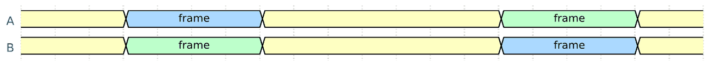
Medium access control: sharing a channel
One teacher, many pupils
A star network is a classroom with one teacher: every pupil talks only to the teacher, never directly to each other.
Simple, but if two pupils speak at once, the teacher understands neither.
- Star topology around an Access Point (AP): one node collects the data or bridges the wireless network to the wired one. Also known as sink or gateway (GW).
- Wireless devices talk directly to the AP.
- The star is vulnerable to collisions and interference: all devices share one channel.
- Overlapping networks can use a different channel to mitigate interference (FDMA, slide 19).
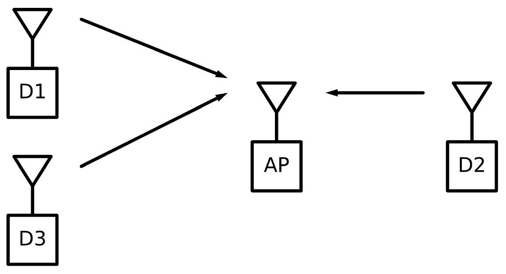
CSMA/CA
Listen before you talk
Polite conversation: before you speak, you listen. If someone is talking, you wait a random moment before trying again, so that two polite people do not keep starting together.
That is CSMA/CA. It cannot stop two people from starting at exactly the same moment, though.
- CSMA/CA (Carrier Sense Multiple Access with Collision Avoidance): sense the channel before transmitting (Clear Channel Assessment, CCA). If the channel is free, transmit. If it is busy, wait some time randomly before attempting transmission.
- The waiting uses binary exponential backoff (as in Week 7): after each failure the random waiting window doubles, which spreads waiting devices out when the channel is busy.
- Used by IEEE 802.11 (WiFi).
- Collision avoidance reduces collisions but cannot eliminate them: two devices that sense the channel in the same moment both find it free and transmit together.
- In the timeline: Dev 1 senses a free channel and transmits; Dev 3 and Dev 2 find it busy and back off. Dev 3 later finds it free and transmits; Dev 2 finds it busy again and transmits last. The AP receives the three frames one after the other.
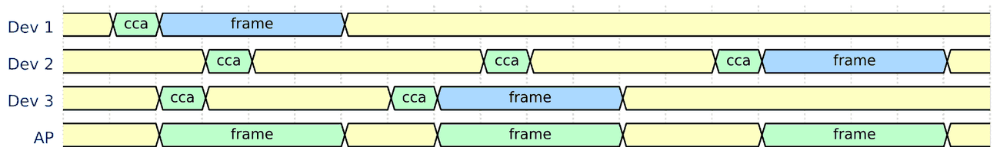
Acknowledgements
"Got it?" after every frame
On a bad phone line you ask "got it?" after every sentence, and if you hear nothing back, you repeat yourself.
Radio links do the same: the receiver confirms every frame, and silence means "say that again".
- Channel errors are more likely than in wired networks. Collision avoidance reduces the probability of collisions, but collisions can still happen; there is interference from other nodes of the same network and from overlapping networks; and a signal might arrive weaker because of environmental issues, such as an obstacle.
- Acknowledgements (ACK) at the end of each frame: if no ACK arrives, retransmit; if the maximum number of retransmission attempts is reached, drop the frame.
- The missing ACK is how a sender learns about a collision, since it cannot listen while transmitting.
- If each attempt succeeds with probability p, independently, and up to R retransmissions are allowed:P(delivered) = 1 - (1 - p)R+1 p = 70%, R = 3: 99.2%
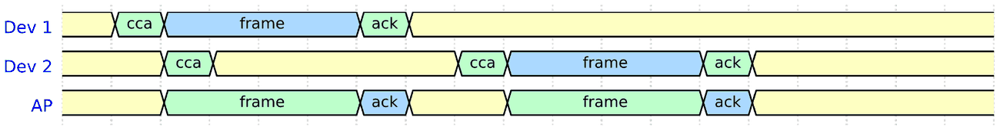
Radio duty cycle
Switch the radio off
Leaving the radio on is like leaving the fridge door open: nothing seems to happen, but the energy drains away.
Listening for messages costs as much as receiving them, so a battery device must switch its radio off whenever it can, and wake it up at the right moments.
- Devices often have energy constraints: they are battery-powered or rely on energy harvesting.
- The radio consumes a lot of energy when active (TX or RX mode). Listening requires the same power as receiving, so idle listening wastes energy. The CC2650 excerpt: 5.9 to 6.1 mA in RX, 6.1 mA transmitting at 0 dBm, 9.1 mA at 5 dBm.
- Solution: radio duty cycle: turn the radio off when it is not used. The radio then has three states: TX, RX and sleep.Iavg = D · Ion + (1 - D) · Isleep battery life ≈ capacity / Iavg
- Always in RX, a 225 mAh coin cell lasts 225 / 5.9 ≈ 38 hours. At a 1% duty cycle (1 µA sleep) the average drops to about 0.06 mA: roughly 5 months.
- Challenge: how does the receiver know when the transmitter is about to transmit, so it can wake up and put its radio in RX mode? The rest of the lecture gives different answers.
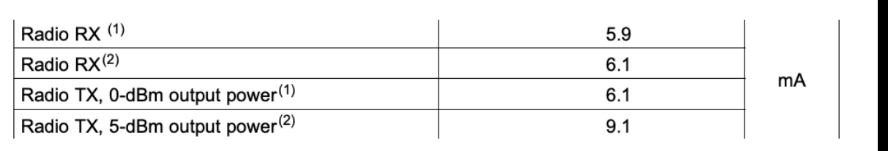
Asymmetric energy availability
An always-open shop
A shop that is always open lets customers come whenever it suits them.
The mains-powered access point is that shop: it listens all the time, so the battery-powered devices can sleep and only wake up when they have something to deliver.
- Star topology: the AP/GW is mains-powered (no energy limitations); the wireless devices are energy-constrained and need to be duty cycled.
- MAC protocol: duty-cycled CSMA. The AP/GW is always in RX mode unless it transmits (no duty cycle). Nodes wake up when they have data to transmit.
- If CCA succeeds, the node transmits the packet and switches to RX mode, waiting for the ACK. If CCA fails, it goes to sleep and tries again later.
- Challenge (slide 26): this is OK for uplink, but how does the AP send data to the devices? It cannot know when a sleeping device will listen.
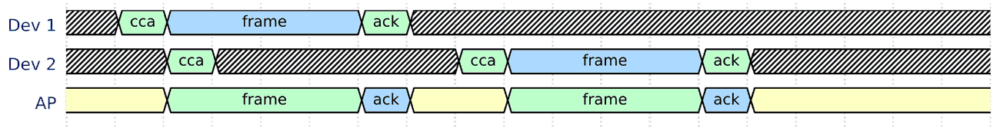
Downlink traffic
"Stay on the line, I have something for you"
You cannot call someone who keeps their phone switched off. You wait until they call you.
Then you say: "stay on the line, I have something for you too".
- MAC protocol: duty-cycled CSMA downlink. The AP/GW cannot initiate a data transfer to duty-cycled nodes.
- The AP/GW can request, in the ACK, that the node remains awake in RX mode: a receive window. In the timeline, the AP's ACK to Dev 2 announces a frame, which Dev 2 receives and acknowledges before going back to sleep.
- Downlink data therefore wait at the AP for the node's next uplink. With uplinks every T and downlink messages arriving at random times:average wait = T / 2, worst case = T
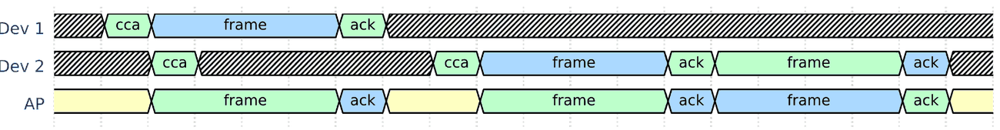
Contention-based vs contention-free MAC
Car lanes and bus lanes
Car lanes are open to everyone: great when traffic is light, a jam when everyone drives at once.
Bus lanes are reserved: a bus always gets through, but the lane sits empty most of the time. Contention-based MACs are car lanes; contention-free MACs are bus lanes.
- CSMA/CA is a contention-based MAC: devices compete for the medium. It is efficient at low to medium traffic and with sporadic traffic, gives no guarantee that important devices will find the medium free, and suffers many collisions at high traffic.
- In a contention-free MAC, transmission slots are allocated to specific devices. It is efficient at high traffic, and important devices are guaranteed to find the medium free (still vulnerable to external interference).
- But contention-free MACs are inefficient with unpredictable traffic (when there is nothing to transmit, the allocated slots are wasted), and less flexible to changes, with overhead for making the slot allocation.
- Analogy: car lanes versus bus lanes.
Guaranteed time slots
Everyone speaks in turn
A timetable: the teacher reads out the order at the start of the lesson, and each pupil speaks only in their own turn.
Nobody interrupts anyone, but a pupil with nothing to say still has a silent turn.
- The AP/GW transmits a beacon with a schedule indicating when each device can transmit. Devices transmit in their dedicated transmit slot; if a device has nothing to transmit, its slot stays idle.
- This is TDMA (Time Division Multiple Access).
- When joining the network, a device needs to stay in RX mode until it gets the first beacon. After that it can sleep between the beacons and its own slot.
- Waking up on time needs a common notion of time. The drift between beacons is handled by Week 9's synchronisation and guard times.
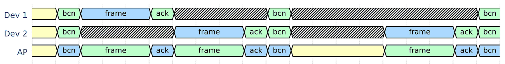
Radio duty cycling with asymmetric energy availability
Simple, efficient, and limited to stars
Letting a mains-powered access point do all the listening is simple and saves the devices a lot of energy.
But it only works when such an always-on partner exists, and the devices can only talk to it, not to each other.
- Advantages: simple to implement and maintain; very energy-efficient for end devices; the overhead of synchronisation falls on the AP/GW.
- Disadvantages: can only be used when the receiver has no energy constraints; cannot support device-to-device and multi-hop topologies (mesh networks); delay for downlink traffic.
- Variations of the paradigm are used by IEEE 802.15.4 (Zigbee, Thread), BLE (Bluetooth Low Energy), LoRaWAN and low-power WiFi.
Multi-hop and symmetric duty cycling
Multi-hop topology
Pass the message along
If you cannot shout across a field, pass the message along a line of people. Each one only needs to reach the next.
More people means the message is repeated more often, but each short shout is easy to hear.
- A device may not have direct access to the gateway: it is too far away, or its signal is too weak (e.g. in a basement).
- Coverage can be extended using multi-hop topologies: normal nodes forward frames to the gateway on behalf of other nodes.
- Cost increase: a frame is transmitted and received multiple times to reach the GW. Cost decrease: short links are more robust than long links, so retransmissions are reduced.
- Multi-hop topologies come as a line, a tree or a mesh (slide 32). A mesh offers alternative paths around a weak or failed link.
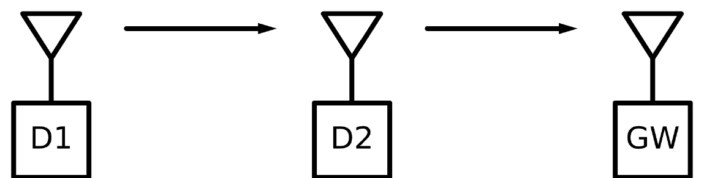
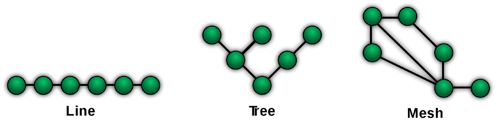
Symmetric energy limitations
Nobody can listen all the time
Two campers with walkie-talkies want their batteries to last the whole trip, so they keep the radios off most of the time.
But a message sent while the other radio is off is simply lost. Before they separate, they must agree on a plan for when to listen.
- Both the transmitter and the receiver need to duty cycle their radios to preserve energy.
- Typical in multi-hop topologies (line, tree or mesh), and also in star topologies when the GW is battery-powered.
- Example: walkie-talkies. Alice and Bob want to communicate with two battery-powered walkie-talkies. When powered on, a walkie-talkie is in listen mode, and the user presses a button to speak. Both want to keep them off as much as possible. Before they separate, they can agree on a radio duty cycle strategy: how can they synchronise their transmissions and receptions?
- The next slides give the answers: asynchronous duty cycles, where nodes keep independent schedules (sender-initiated, receiver-initiated, wakeup radio), and synchronous duty cycles, where they agree on a shared one.
Sender-initiated asynchronous MAC
Knock until they open
Imagine a door behind which someone naps but checks the door every ten minutes. A visitor knocks and keeps knocking until the sleeper peeks out, then hands over the parcel.
The sleeper only spends a moment every ten minutes; the visitor pays with knocking and waiting.
- Also known as preamble sampling or low-power listening (LPL).
- Nodes do not synchronise their duty cycles (asynchronous). When idle, nodes periodically turn their radios to RX mode and sample the channel: if nothing is detected, they go back to sleep; if a preamble is detected, they send a CTS (clear to send) message and receive the frame.
- Nodes with data to send transmit a preamble (or RTS, ready to send) and listen for a CTS. If a CTS is received, they transmit the frame; if not, they send the preamble again and repeat.
- The listening PERIOD bounds idle listening and defines the sender's delay and energy costs. A sender waits for the receiver's next sample: half a PERIOD on average, a full PERIOD in the worst case.idle listening ≈ tsample / PERIOD delay and strobing ≈ PERIOD / 2
- In the timeline Dev 1 strobes RTS after RTS, listening in between; Dev 2 wakes up for its next sample, hears an RTS, answers with a CTS, and the frame and ACK follow.
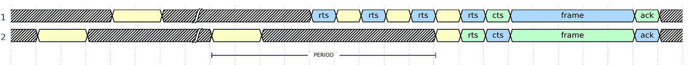
Receiver-initiated asynchronous MAC
"Anything for me?"
Now the sleeper takes the initiative: every ten minutes they open the door briefly and call "anything for me?".
A visitor with a parcel waits at the door until it opens.
- Nodes do not synchronise their duty cycles (asynchronous).
- When idle, nodes periodically transmit a beacon (or CTS, clear to send) and put their radios in RX mode for a while: if nothing is detected, they go back to sleep; if a preamble is detected, they stay in RX mode and receive the whole frame.
- Nodes with data to send put their radio in RX mode and listen until they get the CTS of their destination.
- The listening PERIOD again bounds idle listening and defines the sender's delay and energy costs: here the sender listens for half a PERIOD on average.
- The performance of receiver-initiated and sender-initiated approaches is comparable; only who pays for the waiting differs.
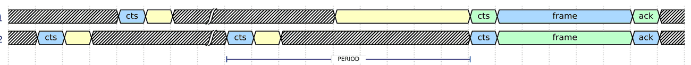
Asynchronous MAC with wakeup radio
A doorbell that never sleeps
A doorbell: the house can be dark and asleep, but the tiny bell circuit is always on and costs almost nothing.
Ring it, and the inhabitants wake up and open the door.
- Devices employ an extra radio, the wakeup radio: very low power, so it can stay in listen mode continuously; very low data rates (just enough to send an ID); typically limited coverage.
- When idle, the main radio is off and the wakeup radio is in RX mode.
- A node with data to transmit sends an RTS message via the wakeup radio, then puts its main radio in TX mode and sends the frame. The receiver of the RTS puts its main radio in RX mode and waits for the frame.
- The delay is just the wakeup message (milliseconds) and idle listening is cheap, because a wakeup receiver draws microwatts. The costs: extra hardware, and the wakeup radio's limited range limits the network.
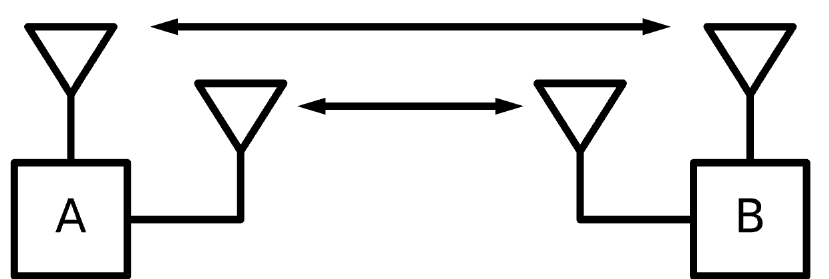
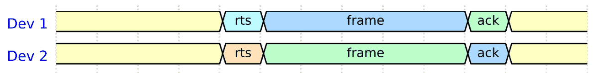
Synchronous MAC
Agreed office hours
Office hours: everyone agrees to be at their desks from 10 to 11 and away otherwise. Inside office hours they talk as usual; outside they are free.
It only works if everyone's watch shows the same time.
- Devices synchronise their duty cycles: they switch between active and sleep periods together. During the active period they use any MAC scheme, like CSMA/CA or guaranteed time slots.
- The duty cycle is controlled by the duration of the active and sleep periods.
- Idle listening is reduced but not eliminated: nodes listen through the whole active period even when nothing arrives.
- It requires a common notion of time: periodic time synchronisation (Week 9). Because clocks drift, nodes wake up a guard time early.guard ≈ relative drift × time since last sync 2 × 20 ppm × 10 s = 0.4 ms
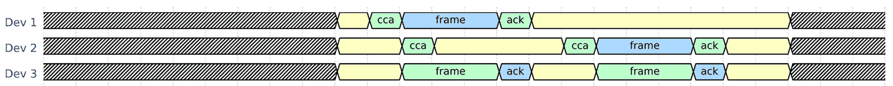
Classification of MAC protocols
Who duty cycles, and how they share
All the protocols in this lecture answer two questions.
Who can afford to keep the radio on? And how do the devices avoid talking over each other?
Duty cycle:
- No energy constraints: no duty cycle (plain CSMA/CA, slide 22).
- Energy constraints only on end devices: the end devices duty cycle (duty-cycled CSMA, guaranteed time slots, slides 25 to 30).
- Energy constraints on all devices: all devices duty cycle, with synchronous duty cycles (slide 37) or asynchronous ones: sender-initiated (slide 34), receiver-initiated (slide 35) or wakeup radio (slide 36).
Contention handling:
- Contention-free: allocated slots (TDMA, guaranteed time slots).
- Contention-based: devices compete (CSMA/CA).
Cheat sheet
The formulas and numbers worth memorising
Decibels
+3 dB ≈ ×2, +10 dB ≈ ×10. +17 dB ≈ ×50; -6 dB ≈ ÷4.
dBm
0 dBm = 1 mW, 30 dBm = 1 W. -10 dBm + 3 dB = -7 dBm ≈ 0.2 mW.
Adding powers
Two equal powers: +3 dB. Never add dBm values.
Link budget
Margin = PRX - sensitivity. RSSI estimates LP.
Path loss
Free space n = 2: +6 dB per doubling. L(1 m) ≈ 40 dB at 2.4 GHz.
Antennas
Passive: high gain in one direction means low gain in all others.
Reception
Sensitivity e.g. -97 dBm. Capture: the clearly stronger packet survives.
Packet errors
Longer packets fail more often at the same BER.
Wavelength
2.4 GHz: 12.5 cm, λ/4 antenna ≈ 3 cm. Lower band: more range, bigger antenna, lower bitrate.
2.4 GHz channels
Orthogonal: 1, 6, 11. 802.15.4: 2405 + 5(k - 11) MHz, 2 MHz wide.
Retransmissions
No ACK means retransmit; the ACK is the only collision detector.
Duty cycle
CC2650 RX 5.9 mA: 38 h on 225 mAh always on; about 5 months at 1%.
Asynchronous MAC
Sender- and receiver-initiated are comparable; a wakeup radio removes the PERIOD.
Synchronous MAC
40 ppm × 10 s = 0.4 ms. Needs periodic time synchronisation.
Figures cropped from the lecture slides "Wireless Networked Embedded Systems" by Xenofon Fafoutis, DTU Compute, with their original sources noted. For personal study.